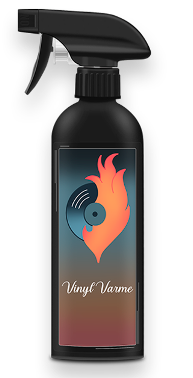

Vinylens comeback:
Hvem køber dem, og hvorfor vælger flere den analoge lyd?
Af
Felicia Coda - 05/10/2024
I en digital tidsalder, hvor musik er mere tilgængelig end nogensinde, og streamingtjenester dominerer markedet, er det overraskende at se en ældre teknologi, som vinylplader, gøre et markant comeback. Men hvorfor er det, at flere og flere musikelskere vender tilbage til den analoge lyd? Hvad er det ved vinylplader, der får folk til at vælge dem frem for digitale alternativer?
Hvad er vinylplader, og hvordan virker de?
Vinylplader er runde skiver, der er lavet af polyvinylklorid (PVC), som har været brugt til at optage og afspille musik siden begyndelsen af det 20. århundrede. En vinylplade afspilles ved hjælp af en pladespiller, hvor en nål bevæger sig gennem rillerne på pladen og omdanner de analoge signaler til lyd. Denne metode står i skarp kontrast til digitale formater, hvor lyden er kodet i bits og bytes.
Men hvordan virker vinylplader præcist? Når pladespilleren kører, skaber nålen vibrationer, som opfanges og sendes videre gennem forstærkeren og ud i højttalerne. Det analoge format betyder, at lyden opfanges i sin fulde form, uden de komprimeringer der foregår ved digital lyd. Resultatet? Mange musikelskere hævder, at vinyl giver en "varmere", mere autentisk lydoplevelse.
Hvem køber vinylplader i dag?
Det interessante ved vinylens comeback er, at målgruppen er langt mere varieret, end man måske skulle tro. Traditionelt blev vinylplader forbundet med ældre generationer, der havde et nostalgisk forhold til formatet, men i dag ser man en stor interesse blandt unge mennesker. Faktisk har flere undersøgelser vist, at en betydelig del af vinylkøberne er unge mellem 18 og 34 år, som enten er nye i vinylverdenen eller er på udkig efter noget mere håndgribeligt og unikt end de digitale alternativer.
For mange af disse unge købere handler det ikke kun om lyden, men også om hele oplevelsen. Fra albumcoverets kunstværker til ritualet med at lægge pladen på og høre musikken uden at springe mellem numre. Vinylplader bliver også betragtet som samlerobjekter, og det fysiske aspekt giver en følelse af værdi, som mange digitale filer ikke kan konkurrere med.
Hvor køber man vinylplader?
Med vinylens stigende popularitet er der flere steder, hvor man kan købe plader, både online og i fysiske butikker. Mange pladebutikker er vendt tilbage i de større byer, hvor de tilbyder alt fra klassiske udgivelser til nye album fra moderne kunstnere. Derudover findes der adskillige online markedspladser, hvor man kan købe både nye og brugte plader. Sider som Discogs og eBay har gjort det muligt at handle sjældne udgivelser globalt.
Hvorfor vælger folk vinyl over digital musik?
Der er flere grunde til, at folk vælger vinylplader over digitale formater. For nogle er det lydkvaliteten, der trækker. Som nævnt tidligere, så beskrives den analoge lyd ofte som mere "ægte" og "varm". Lyden på en vinylplade er ikke komprimeret på samme måde som digitale filer, hvilket betyder, at du får en bredere lydspektrum.
For andre handler det om selve oplevelsen. At høre musik på vinyl er en bevidst handling – man skal tage pladen ud, placere den på pladespilleren og sætte nålen ned. Denne proces gør musikhøringen til noget specielt og ceremonielt, i modsætning til den umiddelbare og til tider overfladiske oplevelse ved at trykke play på en streamingtjeneste.
Hvad er vinylplader værd?
Når det kommer til værdien af vinylplader, kan det variere meget. Nogle udgivelser, især sjældne eller begrænsede oplag, kan være meget værdifulde. Plader fra ikoniske kunstnere, som aldrig blev genudgivet på andre formater, kan også være eftertragtede blandt samlere. På den anden side kan almindelige plader ofte findes til overkommelige priser i genbrugsbutikker eller på loppemarkeder.
Hvor sælger man vinylplader?
Hvis du har vinylplader, du gerne vil sælge, er der flere muligheder. Mange samlere og musikelskere handler vinyl både online og i fysiske butikker. Online markedspladser som Discogs og eBay er populære platforme, hvor du kan sælge både sjældne og almindelige plader. Discogs er særligt kendt for at være et globalt samlingssted for vinylentusiaster, hvor man kan købe og sælge plader baseret på detaljerede oplysninger om udgivelser. Derudover findes der lokale pladebutikker og loppe-/markedspladser, hvor du også kan finde købere til din samling. Ved at sælge i fysiske butikker kan du ofte få en vurdering af dine plader fra erfarne musikhandlere.

Hvordan renser man vinylplader?
Hvis du ønsker at holde dine vinylplader i topform, er det vigtigt at vide, hvordan man vedligeholder dem. Støv og snavs kan samle sig i rillerne og påvirke lyden. Mange entusiaster anbefaler regelmæssig rengøring med en blød børste eller en speciel rensevæske. Hos Vinyl Varme tilbyder vi vores egen rensevæske, specielt udviklet til vinylplader, som effektivt fjerner snavs uden at beskadige overfladen. Sammen med korrekt opbevaring i støvfrie omgivelser og ved stuetemperatur kan denne rensevæske sikre, at dine plader holder længere og bevarer deres høje lydkvalitet.
Vinylens fremtid
Selvom det er usandsynligt, at vinyl nogensinde vil overgå streaming i popularitet, ser det ud til, at formatet har fundet en permanent plads i hjertet af mange musikelskere. Med den stigende interesse fra både nye og gamle generationer er vinylplader ikke kun et retro-fænomen, men en levedygtig del af musiklandskabet i dag.
Hvis du endnu ikke har prøvet at høre musik på vinyl, er det måske på tide at opleve magien for dig selv.